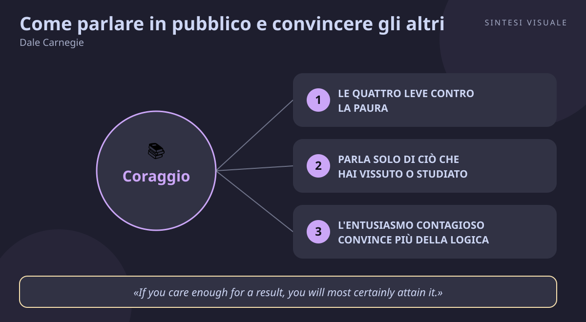

Home / Libri / Come parlare in pubblico e convincere gli altri

Come parlare in pubblico e convincere gli altri
Dale Carnegie · Public speaking
«Come parlare in pubblico e convincere gli altri»
- Desiderio e pratica
- Parla di ciò che vivi
- Entusiasmo contagioso
- Formula magica
🧭Introduzione
Dale Carnegie (1888–1955) non era un accademico: era un ragazzo del Missouri che da giovane tremava all'idea di parlare davanti agli altri e che nel 1912, per pagarsi l'affitto a New York, cominciò a tenere corsi serali di oratoria alla YMCA. Quei corsi divennero un fenomeno: uomini d'affari in fila per imparare a vincere la paura di parlare. Dal 1926 Carnegie fissò il suo metodo nel manuale Public Speaking and Influencing Men in Business; dopo la sua morte, la moglie Dorothy riordinò appunti e materiali dei corsi e nel 1962 pubblicò da Simon & Schuster questa versione snella e definitiva, The Quick and Easy Way to Effective Speaking, arrivata in Italia con Bompiani come Come parlare in pubblico e convincere gli altri.
Perché conta oggi: riunioni su Zoom, colloqui, presentazioni ai clienti, messaggi vocali, video sui social — oggi parliamo in pubblico molto più spesso di quanto crediamo, solo che il "pubblico" a volte sono tre colleghi in una call. E la paura è la stessa del 1912: tachicardia, mente vuota, voce tremante. Questo libro conta perché non insegna recitazione, ma un metodo pratico per trasformare quella paura in energia.
A chi è utile: a chi presenta progetti e idee al lavoro; a studenti e professionisti che affrontano colloqui ed esami orali; a chi vende o guida persone; e a chiunque voglia dire la sua nelle riunioni invece di restare zitto per timidezza.
📘Riassunto
La scintilla centrale: parlare in pubblico non è un dono di natura riservato a pochi eletti, ma un'abilità che chiunque può imparare — perché un buon discorso non è altro che una normale conversazione ingrandita per una stanza più grande.
La struttura logica procede in quattro mosse:
- Vincere la paura: il panico da palcoscenico è quasi universale e si cura con quattro leve — desiderio forte di migliorare, preparazione totale, comportarsi da sicuri anche prima di sentirsi tali, e pratica continua in ogni occasione.
- Preparare: scegli solo argomenti che conosci per esperienza o studio diretto, raccogli molto più materiale di quello che userai e non imparare mai il testo a memoria parola per parola.
- Costruire il discorso: apri subito con un fatto o un episodio personale che catturi l'attenzione, riempi il corpo di esempi concreti e storie, chiudi con un appello chiaro all'azione.
- Parlare ogni giorno: applica le stesse tecniche alle conversazioni quotidiane — dettagli precisi, parole che dipingono immagini, entusiasmo vero — così quando conterà davvero sarai già allenato.
Il punto di svolta: la "formula magica" per i discorsi brevi che devono ottenere un risultato — racconta un episodio vissuto, chiedi esplicitamente l'azione che vuoi, spiega il beneficio per chi ascolta. Il lettore capisce che non serve essere brillanti: serve essere concreti, chiedere con chiarezza e dare una ragione per dire sì.
L'eredità oggi: il metodo Carnegie è ancora la spina dorsale dei corsi Dale Carnegie Training in tutto il mondo e i suoi principi (storie personali, niente testo imparato a memoria, entusiasmo prima della logica) sono gli stessi che ritroviamo nei manuali moderni come Talk Like TED; è il libro che ha insegnato a generazioni di timidi — imprenditori e venditori compresi — che l'oratore non nasce, si fa.
💡Concetti chiave
- Le quattro leve contro la paura: desiderio forte, preparazione totale, agire da sicuri, pratica continua.
- Parla solo di ciò che hai vissuto o studiato: l'autorità nasce dall'esperienza diretta, non dai libri.
- L'entusiasmo contagioso convince più della logica: la ragione convince la mente, la passione muove la volontà.
- La formula magica: episodio vissuto, richiesta d'azione chiara, beneficio per chi ascolta.
- Apri forte, chiudi con un appello: niente scuse né barzellette forzate all'inizio; alla fine, di' esattamente cosa vuoi che facciano.
- La conversazione di ogni giorno è la palestra: il grande discorso si prepara nei piccoli discorsi quotidiani.
📖1. Le quattro leve contro la paura
- Definizione la paura di parlare non si elimina con la forza di volontà, ma con un sistema in quattro punti — un desiderio intenso e tenace di migliorare, una conoscenza profonda di ciò che dirai, il comportarsi come se si fosse sicuri (la postura e il tono trascinano l'emozione) e la pratica instancabile in ogni occasione possibile.
- Esempio un'impiegata che arrossisce anche solo a presentarsi in riunione accetta di leggere i verbali ad alta voce per un mese; alla quarta volta la voce trema di meno, alla decima scopre di riuscire persino a improvvisare una frase.
- Come applicarlo (a) scrivi su un foglio perché vuoi imparare a parlare (promozione, progetto, autostima) e rileggilo prima di ogni occasione; (b) preparati sempre al punto da sapere molto più di ciò che dirai; (c) cerca micro-palchi settimanali — una domanda in riunione, un brindisi, un intervento a un corso.
- Errore comune aspettare di "sentirsi pronti" prima di esporsi — la sicurezza non precede l'azione, la segue; chi aspetta non comincia mai.
- Collegamento è la stessa logica dell'esposizione graduale usata in psicologia contro le fobie, e richiama il principio di William James per cui l'azione trascina l'emozione, non viceversa.
📖2. Parla solo di ciò che hai vissuto o studiato
- Definizione la prima regola del metodo è scegliere argomenti su cui hai un diritto conquistato con l'esperienza o lo studio diretto — ciò che la vita ti ha insegnato — perché solo lì hai dettagli veri, convinzione vera e riserve di materiale a cui attingere.
- Esempio due colleghi presentano lo stesso report sulle vendite: uno legge slide piene di percentuali astratte e annoia; l'altro racconta tre visite dai clienti, con nomi, obiezioni e risposte, e la sala lo segue perché "c'era davvero".
- Come applicarlo (a) prima di accettare un intervento, chiediti "cosa ho vissuto io su questo tema?"; (b) raccogli il triplo del materiale che ti serve, poi scarta senza pietà; (c) se il tema ti è stato imposto e non lo conosci, fai prima una mini-indagine — interviste, dati, visite — finché non diventa anche tuo.
- Errore comune costruire discorsi "di seconda mano" copiando frasi da libri o da internet — il pubblico sente subito la differenza tra chi racconta e chi ripete.
- Collegamento lo stesso principio anima Talk Like TED di Carmine Gallo (le storie personali sono il motore dei discorsi memorabili) e il consiglio di Deep Work di Cal Newport: la profondità di ciò che sai si sente in superficie.
📖3. L'entusiasmo contagioso convince più della logica
- Definizione la sola ragione raramente sposta le persone; ciò che trascina è l'entusiasmo sincero — rivivere mentre parli l'emozione che hai provato — perché il pubblico non adotta tanto le tue idee quanto il tuo stato d'animo.
- Esempio un artigiano che chiede un prestito in banca snocciola numeri con voce spenta e ottiene un rinvio; un secondo, con numeri simili ma occhi accesi mentre descrive il laboratorio che sogna, ottiene fiducia — a parità di cifre, ha vinto il calore.
- Come applicarlo (a) scegli, quando puoi, temi che ti stanno davvero a cuore; (b) prima di parlare, richiama alla mente il momento in cui hai vissuto ciò che racconti, finché non lo "rivedi"; (c) lascia che il corpo segua l'emozione — varia ritmo, volume e pause come faresti raccontando la cosa a un amico.
- Errore comune scambiare l'entusiasmo per teatrino — gesti studiati, voce impostata, sorrisi di plastica; la platea perdona la goffaggine, non la finzione.
- Collegamento Cialdini nelle Armi della persuasione mostra che simpatia ed emozione aprono la porta alla persuasione; Goleman nell'Intelligenza emotiva spiega perché gli stati d'animo sono contagiosi — Carnegie lo applicava al palco decenni prima.
📖4. La formula magica
- Definizione per i discorsi brevi che devono ottenere un'azione, Carnegie prescrive una struttura in tre passi — racconta un episodio concreto della tua vita che illustra il punto, formula in modo esplicito e breve l'azione che chiedi, indica il beneficio che chi ascolta ne ricaverà.
- Esempio vuoi che il condominio approvi la videosorveglianza: racconti il furto nel garage del vicino (episodio), proponi di votare il preventivo da 40 euro a famiglia (azione), spieghi che l'assicurazione abbasserà le polizze e i furti crolleranno (beneficio) — in novanta secondi hai detto tutto.
- Come applicarlo (a) tieni un taccuino di episodi vissuti classificati per tema, così hai sempre materiale; (b) scrivi la richiesta d'azione in una sola frase, senza giri di parole; (c) formula il beneficio dal punto di vista di chi ascolta, non dal tuo ("voi risparmierete", non "io avrò ragione").
- Errore comune mettere la conclusione alla fine dopo una lunga argomentazione — il pubblico si è già distratto; la storia prima cattura, la tesi astratta prima annoia.
- Collegamento è l'antenata delle moderne strutture di pitch (problema-soluzione-beneficio) e dialoga con Getting to Yes di Fisher e Ury: anche in negoziazione, interessi concreti e proposte chiare battono le posizioni astratte.
📖5. Apri forte, chiudi con un appello
- Definizione l'apertura decide se ti ascolteranno, la chiusura se faranno qualcosa: comincia subito con un episodio, un dato che colpisce o una domanda — mai con scuse ("non sono un esperto...") o barzellette forzate — e chiudi riassumendo e chiedendo esplicitamente l'azione desiderata.
- Esempio a un colloquio di lavoro, invece di aprire con "mi scusi se sono emozionato, non ho molta esperienza nei discorsi", il candidato comincia: "tre anni fa ho risolto per un cliente un problema uguale al vostro, in una notte" — la commissione alza gli occhi dal curriculum.
- Come applicarlo (a) prepara le prime due frasi parola per parola (è l'unico punto in cui la precisione aiuta); (b) prepara anche l'ultima frase: un invito concreto ("entro venerdì provate..."); (c) elimina ogni apertura che chiede permesso o scusa — parti dal sodo.
- Errore comune chiudere sfumando ("ecco, questo è quanto, grazie...") per timidezza — senza un appello chiaro il pubblico applaude e dimentica tutto entro un'ora.
- Collegamento Talk Like TED conferma che le aperture narrative catturano l'attenzione nei primi secondi; nelle vendite, SPIN Selling insegna la stessa lezione — la domanda esplicita di impegno chiude più affari di qualunque argomentazione.
📖6. La conversazione di ogni giorno è la palestra
- Definizione le tecniche del palco — dettagli precisi, parole concrete che dipingono immagini, nomi di persone, brevi dialoghi — vanno esercitate nelle conversazioni quotidiane, al lavoro e in famiglia, così diventano abitudini automatiche quando conterà davvero.
- Esempio invece di dire a cena "oggi al lavoro è stata una giornata difficile", racconti: "alle dieci il cliente Rossi mi ha detto in faccia che il preventivo era troppo caro, e io..." — stai allenando, senza saperlo, la stessa muscolatura del discorso pubblico.
- Come applicarlo (a) in ogni conversazione usa almeno un dettaglio specifico (nomi, numeri, luoghi) invece di generalità; (b) offriti volontario per ogni piccola occasione di parlare — auguri, presentazioni, telefonate difficili; (c) rileggi ogni tanto un tuo discorso passato e chiediti cosa taglieresti.
- Errore comune trattare il libro come teoria da ammirare e rimandare la pratica "a quando servirà" — il miglioramento viene dal fare, non dal leggere come si fa.
- Collegamento è la filosofia di Atomic Habits di James Clear applicata alla parola — piccoli miglioramenti quotidiani dell'1% compongono, nel tempo, un oratore irriconoscibile — e l'eco del "non ancora" di Dweck in Mindset: ogni conversazione è un passo verso la versione di te che parla con sicurezza.
💬Citazioni da ricordare
"Speak about something you have earned the right to talk about through experience or study." — È la regola numero uno del libro: conta perché sposta il baricentro dal talento al diritto — non devi essere brillante, devi avere qualcosa di vero da dire.
"If you care enough for a result, you will most certainly attain it." — Parole dello psicologo William James che Carnegie definiva la chiave del coraggio: conta perché ricorda che il desiderio intenso e esclusivo è il carburante che fa reggere la fatica della pratica.
Sintesi di un principio cardine (non parole testuali): un buon discorso è una conversazione ingrandita — conta perché dissolve il mito del palco: non devi diventare un'altra persona, devi restare te stesso davanti a più persone.
🌍Esempi di oggi
- La riunione su Zoom in cui nessuno parla. Il capo chiede pareri e cala il silenzio: chi ha preparato un episodio concreto di 30 secondi ("ieri il cliente X mi ha detto che...") rompe il ghiaccio e diventa il punto di riferimento della discussione — formula magica in miniatura.
- Il messaggio vocale di lavoro da due minuti. Un collega manda vocali confusi e prolissi; un altro apre con il punto, dà un esempio, chiude con la richiesta esatta ("mi serve il tuo ok entro le 17"). Il secondo applica Carnegie senza saperlo — e ottiene risposte mentre il primo viene rimandato.
- Il genitore alla riunione di classe. Invece di lamentarsi in astratto ("la scuola non funziona"), una madre racconta un episodio preciso, propone un'azione concreta e spiega il beneficio per tutti i ragazzi: in tre minuti ottiene più dell'ora di lamentele generiche che l'ha preceduta.
🛠️Azioni pratiche
- Cerca un micro-palco: fai almeno un intervento volontario — una domanda in riunione, un brindisi, un parere esplicito in una discussione — e preparalo con la formula magica (episodio, richiesta, beneficio).
- Prepara il tuo "discorso tascabile": scrivi e prova ad alta voce un racconto di 2 minuti su qualcosa che hai vissuto al lavoro (un problema risolto, un errore da cui hai imparato); sarà il tuo modulo pronto per colloqui, presentazioni e cene.
- Allena i dettagli quotidiani: per sette giorni, in ogni conversazione importante sostituisci una generalità ("è andata bene") con un dettaglio concreto (nomi, numeri, una scena) — e nota come cambia l'attenzione di chi ti ascolta.
💎Da portare a casa
Non devi diventare un'altra persona per parlare bene in pubblico: devi portare te stesso — le tue esperienze, il tuo entusiasmo, la tua voce — davanti a più persone, un discorso concreto alla volta.
Vuoi approfondire? Rispondi in chat con il numero del concetto (1–6) che vuoi esplorare meglio — paura, esperienza, entusiasmo, formula magica, aperture e chiusure, palestra quotidiana — oppure fai una domanda su public speaking, vendite, negoziazione, stress, emozioni o carriera, e lo svisceriamo insieme.
🖼️In un colpo d’occhio

Tocca l’immagine per ingrandirla.